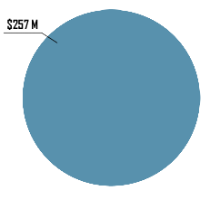

It is not just the Intensity
but also the Extensity
In the 2003 Canberra fire disaster, the cost to the insurer was $257 million (West Australia).
Damages cost
Irrespective of
And
Sydney has also experienced a lesser but still serious bushfire disaster since 1994. Many people moving into rural small holdings have little awareness of bushfire issues and the threat posed by unmanaged native vegetation.
Aforementioned cases were dwarfed by a large wildfire in Victoria in 2007. The fire burned for several weeks and covered an area about one million hectares. An unofficial estimate cost over $900 million.
The 2016 fire disaster at Yarloop virtually destroyed the town and two lives were lost. And after 2 years, local people were still suffering trauma distress from the fire. Infrastructure losses include over 160 homes destroyed and with an estimated cost of $26 million in restoring electrical network by Western Power.
Is inherently a dangerous business but we should not forget that most people fighting rural fires are volunteers. Why should we expose them to huge risks entailed in fighting fire. Don't we owe it to them to make their job as safe as we can? Fuel reduction burning is one of the practical ways.
Forest are also effect by these fires but are not "destroyed". Some are Ash-type eucalypt forests are killed in this way but drier forest type, such as Jarrah in WA are not destroyed but severly damaged. Most eucalypt have a number of specialised features that enable recovery from intense fire. The growth layer under the bark (Cambium) may be killed in one side of bole, resulting in a "dry sides" which are prone to insect attack. Furthermore, Rots also gain entry via dry side and burnt limps.In the case of Pine, which are dependent for timber supplies in WA. The log may also be degraded for certain end uses by charcoal. Such destruction of immature plantations distrupts the flow of future timber supplies.